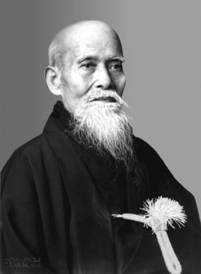
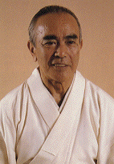
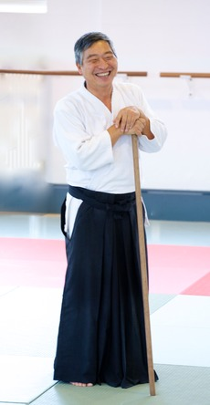

| INICIO | CLASES | PRÁCTICA | SEMINARIO | ARTÍCULOS | BIBLIOGRAFÍA | HISTORIA | LINKS | CONTACTO |
Historia del Ki Aikido
O'Sensei Morihei Ueshiba

O'Sensei Morihei Ueshiba creó el Aikido a mediados del siglo XX, luego de haber estudiado con diferentes maestros de Jujutsu, espada y religión. La primer escuela que se desarrolló en Japón y tal vez la mas difundida en todo el mundo hasta el momento se denomina Aikikai.
- Nació en Wakayama, Japón el 14 de Diciembre de 1883.
- En su juventud estudió jujutsu, espada y kendo.
- Fué voluntario de la guerra contra Rusia en 1904.
- En 1912 se mudó a Hokkaido, donde estudió Aiki-jujutsu hasta 1917 con el maestro Takeda Sokaku.
- O'Sensei encontro al Reverendo Wanisaburo Deguchi, el fundador de una secta religiosa Shinto llamada Omoto-kyu.
- En 1948 se abre la escuela Aikikai en Tokio.
- O'Sensei Morihei Ueshiba murió en Tokyo en 1969 a los 86 años de edad.
Doshu Koichi Tohei

Tohei Koichi estudió Judo y mas tarde Aikido llegando a ser uno de los principales alumnos de O´Sensei Morihei Ueshiba. Desarrolló un criterio diferente en la práctica del Aikido basándose en la Unificación de Mente y Cuerpo y sus cuatro principios, mantener el punto uno, extender ki, relajarse completamente y mantener el peso abajo. De esta manera creó en la década de 1970, el Ki Aikido y la escuela asociada a este arte marcial fué la Ki No Kenkyukai.
- Nació en Tokio - Japón el 20 de Enero de 1920.
- En 1935 recibe el cinturón negro de Judo.
- En 1939 comienza con su estudio de Aikido con Morihei Ueshiba.
- En 1944 es enviado a China durante la 2a guerra mundial.
- En 1969 le fué otorgado el 10o dan en Aikido.
- El 16 de Setiembre de 1971, estableció la Sociedad Ki.
- En 1977 creó un sistema de 30 Taigis.
- En 1990 inaugura el cuartel general mundial de la Sociedad Ki denominado Ki No Sato en Tochigi, Japón.
- Doshu Koichi Tohei murió en 2011 a los 91 años de edad.

Kenjiro Yoshigasaki estudió Ki Aikido con el maestro Koichi Tohei, también Yoga y religión. En el año 2002 creó su propia línea de Ki Aikido denominada Ki No Kenkyukai International, de la cual depende nuestro dojo actualmente y en la cual basamos sus principios de práctica y su currícula de exámenes. Brindó Seminarios de Ki Aikido en Argentina desde el año 1993 hasta el 2002 y en 2016.
- Nació en Kagoshima, Japón en 1951.
- Comenzó a practicar Yoga a los 10 años de edad.
- Estudió Yoga en la India durante 1971.
- Alcanzó el grado de Instructor de Aikido en 1973 siendo discípulo de Sensei Tohei Koichi.
- Estudió Budismo Zen, Nuevo Sintoismo, Catolicismo e Islamismo.
- Dicta Seminarios de Ki Aikido en Europa desde 1977.
- Está a cargo de 120 dojos y 4000 alumnos en Europa, Sudamerica y Sudafrica.
- Vive actualmente en Bruselas (Bélgica), desde donde dirige la Ki no Kenkyukai International.
- Escribió los libros "El viaje interno de un extraño," "Aikido, arte del peligro, arte de vida" y "All of Aikido"
Historia de Ki Aikido Buenos Aires

Doshu Yoshigasaki

Sensei Michael Holm

Sensei Norberto Kiman

Quien fué Shihan Giuseppe Ruglioni ?

Organizaciones